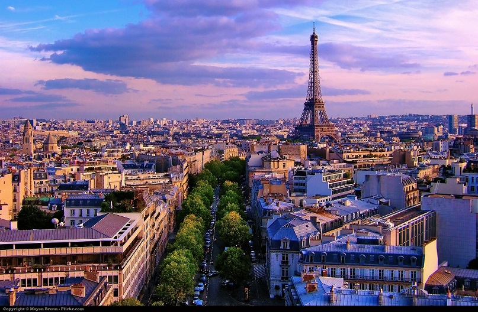
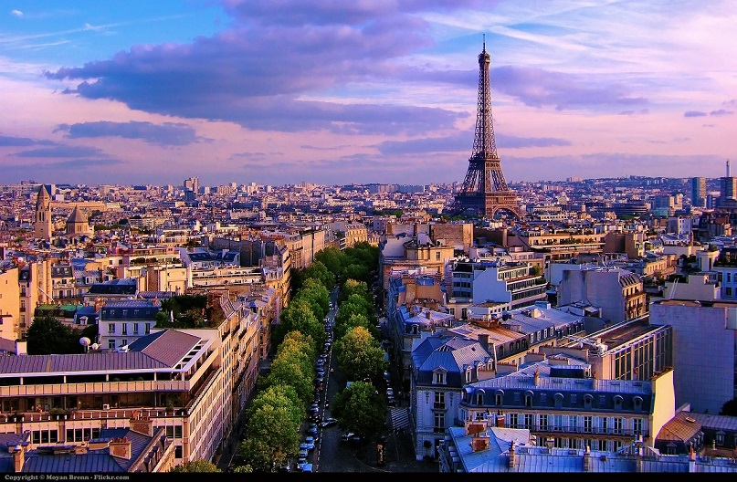

Paris
Bienvenue à Paris
Ville mythique que le monde entier rêve de visiter un jour, Paris a su garder son authenticité. Il y a encore des petites rues à explorer autour des grands monuments et, avec une absence presque totale de gratte-ciel, Paris et ses différents quartiers ressemblent plus à un agrégat de villages qu'à une mégalopole. De la tour Eiffel à Notre-Dame, en passant par le Sacré-Cœur, l'Arc de triomphe ou le Centre Pompidou, Paris ne manque pas de monuments emblématiques. D'autres images, moins intemporelles mais tout aussi typiquement parisiennes, sont dans les esprits : les ponts éclairés se reflétant sur la Seine à la nuit tombée ou les chaises cannées à la terrasse des brasseries.
Aujourd'hui, de nouveaux bâtiments comme le musée du Quai Branly continuent de modifier le visage de la capitale. Le Paris de toujours (et des touristes) est bien vivant : le long des grands boulevards, dans les restaurants gastronomiques et les vitrines des maisons de haute couture, ainsi que dans les musées aux collections exceptionnelles, au premier rang desquels l'inégalable Louvre. Une jolie boutique ou une table libre dans un bistrot arrêtera vos déambulations.
Les lieux à visiter
-
Tour Eiffel
La nuit, c'est de la tour Eiffel que l'on a la plus belle vue sur Paris. Chaque année, environ 7 millions de visiteurs grimpent les étages de la tour, avec un arrêt aux 3 plates-formes (à 57 m, 115 m et 276 m). La plupart viennent durant la journée. Par temps clair, la vue s'étend à 60 km à la ronde. Le soir, il y a beaucoup moins de monde. Cela signifie donc moins de temps passé dans la file d'attente… Une fois au sommet, la vue sur les boulevards, les rues et tous les monuments éclairés est vraiment un enchantement. Bien que très controversé lors de sa construction pour l'Exposition universelle de 1889, le chef-d'œuvre de Gustave Eiffel est devenu, pour le monde entier, indissociable de Paris. À l'origine, la tour avait été prévue pour une durée de seulement 20 ans. Elle dut sa « survie » à son immense succès populaire et à l'essor des communications radiophoniques : Gustave Eiffel proposa en effet de l'utiliser comme antenne. Une station-radio permanente fut installée en 1906 à son sommet. Puis son esthétique moderne finit par conquérir même les plus sceptiques et la tour Eiffel devint le symbole de Paris. Elle fut la plus haute structure du monde jusqu'à l'édification du Chrysler Building à Manhattan en 1930. Chaque soir, la tour Eiffel s'illumine.
En plus de l'éclairage doré, qui date de 1986, un phare à double faisceau d'une portée de 80 km s'allume sur la plate-forme supérieure (en levant les yeux, on aperçoit les lampes de 6 000 watts des projecteurs). Et les 10 premières minutes de chaque heure, toute la tour scintille. L'installation des 20 000 ampoules (5 000 par face) nécessaires a demandé 5 mois de travail à 25 alpinistes. Vu de l'intérieur de la tour, ce scintillement est absolument éblouissant. Mais, attention, le soir, il peut y avoir du vent au sommet, donc n'oubliez pas de prendre un pull. Pour faire durer le plaisir, vous pouvez réserver une table à l'un des restaurants de la tour : le 58 Tour Eiffel, au 1er niveau, ou le Jules Verne, au 2e niveau, accessible par ascenseur privé. La mise en place progressive de la billetterie en ligne permet de réduire les files d'attente, en journée comme en soirée. En plus, quand l'espace entre les quatre pieds aura été rénové (ce qui n'est pas prévu avant 2015…), les visiteurs ne patienteront plus sous les intempéries. La création d'un bar à champagne au 3e étage est même prévu !
-
Musée d'Orsay
L'exceptionnelle collection d'art de la seconde moitié du XIXe siècle du musée d'Orsay est conservée dans un superbe bâtiment Art nouveau : l'ancienne gare d'Orsay. Cette gare, construite pour l'Exposition universelle de 1900, fut désaffectée dès 1939, car ses quais étaient devenus trop courts en raison de l'électrification des lignes et de l'allongement des trains. Dans les années 1970, la gare fut classée monument historique, puis l'État décida d'y installer un grand musée destiné à la création artistique de 1848 à 1914. Le musée est réputé en particulier pour ses collections de peintures impressionnistes et postimpressionnistes. Quelques œuvres sont absolument incontournables : Le Déjeuner sur l'herbe et L'Olympia de Manet ; La Rue Montorgueil à Paris, fête du 30 juin 1878 de Monet ;Joueurs de cartes, Pommes vertes et Le Vase bleu de Cézanne ; Bal au moulin de la Galette et Jeunes Filles au piano de Renoir ; les peintures consacrées au monde de la danse de Degas ; les œuvres de Toulouse-Lautrec traitant de l'univers des cabarets ; La Moisson de Pissarro ; Vue du canal Saint-Martin de Sisley ; et les paysages d'Auvers-sur-Oise, à l'extérieur de Paris, peints par Van Gogh. Les collections comprennent également des sculptures, des photographies, du mobilier, etc.
-
Rejoindre les parisiens dans le plus chic des parcs
Au moindre rayon de soleil, tout Paris se donne rendez-vous dans les parcs, le long de la Seine et aux terrasses des cafés. Les chaises métalliques du jardin du Luxembourg, particulièrement cher au cœur des Parisiens, sont prises d'assaut dès qu'il fait beau (les pelouses sont interdites). Le jardin fut construit au XVIIe siècle pour la reine Marie de Médicis, puis donné au Sénat sous le premier Empire. Ses statues (près de 80) en font un véritable musée en plein air illustrant la sculpture du XIXe siècle. Napoléon dédia le parc aux enfants. Beaucoup de Parisiens de souche se souviennent du temps où ils faisaient naviguer des petits bateaux sur le bassin octogonal, assistaient à des spectacles de Guignol, faisaient des tours de manège et des promenades à dos de poney. Ces activités n'ont pas disparu, mais d'autres – une aire de jeux moderne, des terrains de sport – s'y sont ajoutées. À l'angle nord-ouest du parc, des joueurs disputent tous les après-midi, quel que soit le temps, des parties acharnées de cartes et d'échecs (on apporte son jeu). Des expositions de photographies sont fréquemment présentées sur les grilles extérieures du jardin, rue de Médicis.
-
Le Louvre
L'immensité du musée du Louvre pourrait décourager l'amateur d'art le plus insatiable. L'ancienne demeure des rois de France s'étend en effet sur 700 m le long de la Seine. On estime qu'il faudrait environ 9 mois pour voir une à une toutes les œuvres que le musée conserve ! La forteresse de Philippe Auguste (début du XIIIe siècle) fut remaniée au milieu du XVIe pour devenir une résidence royale sous François Ier. Jusque sous Louis XIV, les rois français ne cessèrent de faire des travaux pour modifier et agrandir le palais. C'est en 1793 qu'ouvre le Muséum central des arts, premier musée national. D'année en année, les collections s'étendent et investissent progressivement le palais. À partir de 1882, le pouvoir quitte définitivement le Louvre (à l'exception du ministère des Finances, provisoirement installé dans l'aile Richelieu), qui est alors dévolu dans sa totalité à l'art. Dans les années 1980, le projet du Grand Louvre consiste à rendre au musée l'aile Richelieu et à améliorer la présentation des collections et les installations. Le musée est totalement remodelé, sous la direction de l'architecte sino-américain Ieoh Ming Pei. Sa pyramide de verre est inaugurée en 1989. Les travaux ont permis l'ouverture de nouvelles salles et de 3 cours intérieures.
On compte désormais 35 000 œuvres exposées dans 60 600 m2 de salles réservées aux collections permanentes. Les œuvres sont réparties en 8 départements : Antiquités orientales, Antiquités égyptiennes, Antiquités grecques, étrusques et romaines, Arts de l'islam, Sculptures, Objets d'art, Peintures et Arts graphiques. Les collections égyptiennes, d'une exceptionnelle richesse, doivent beaucoup à l'égyptologue Jean-François Champollion, qui, le premier, a ouvert au Louvre en 1827 un département consacré à l'Égypte ancienne. Le département des Peintures comprend des œuvres représentatives de toutes les écoles de peinture européennes du XIIIe siècle à 1848. Il regroupe environ 6 000 peintures sur 17 850 m2. Par souci de clarté, les œuvres sont classées par école nationale. Les billets peuvent être achetés à l'avance sur le site Internet du musée ou aux machines installées dans le Carrousel du Louvre. Le Paris Museum Pass est aussi valable. Pour éviter l'attente à l'entrée principale de la pyramide, passez par le Carrousel du Louvre (99 rue de Rivoli), ou suivez la sortie « Musée du Louvre » à la station de métro Palais-Royal – Musée-du-Louvre. Le billet est valable toute la journée… ce qui permet de faire une pause. Avant de vous lancer dans la visite, procurez-vous un plan du musée (gratuit) au kiosque de renseignements du hall Napoléon. Choisissez ce que vous voulez voir et établissez un itinéraire. Sinon, les visites guidées sont un bon moyen d'enrichir son regard. Les audioguides aident aussi à circuler dans ce vrai labyrinthe.
-
Le Marais
Le Marais est délimité au sud par la Seine, à l'ouest par la rue Beaubourg, et au nord-est par la rue de Bretagne et le boulevard du Temple (boulevard Beaumarchais au niveau de la Bastille). Épargné par les grandes percées haussmanniennes, c'est un quartier remarquablement préservé. À la fin du XVIIe siècle, à la suite de la construction de la place des Vosges, le quartier devint le lieu de résidence de la noblesse. De superbes hôtels particuliers furent alors bâtis. Beaucoup accueillent maintenant des musées (musée Picasso, Cognacq-Jay, Carnavalet…). Puis le quartier fut petit à petit abandonné, il s'appauvrit, des ateliers furent installés dans les cours. Dans les années 1960, le Marais est « redécouvert » et sa réhabilitation commence. Aujourd'hui, le Marais est au cœur des tendances, lançant et suivant celles-là en matière de design comme de mode. La communauté gay, qui a investi le quartier, y est certainement pour quelque chose. Galeries, boutiques et restaurants branchés côtoient les endroits symboliques du quartier juif. C'est aujourd'hui le nord du quartier (le « haut Marais ») qui « bouge » le plus.
-
La Seine
À voir les bateaux qui vont et viennent sur la Seine, chargés de touristes brandissant leur appareil photo, on pourrait être tenté de fuir à tout prix ces croisières. D'ailleurs, aucun Parisien ne consentira à avouer qu'il en a déjà fait une… ! Pourtant, une fois à bord, glissant paisiblement entre les monuments et les immeubles bordant le boulevard incontestablement le plus beau de Paris, on se dit qu'on aurait eu tort d'y renoncer. Les bateaux qui proposent des croisières sur la Seine sont appelés bateaux-mouches, du nom du quai de la Mouche, à Lyon, où ils étaient fabriqués. L'opérateur le plus connu porte encore le nom de Bateaux Mouches, mais d'autres compagnies offrent également ce service. Sur certains bateaux, il est possible de déjeuner ou de dîner à bord. Les Batobus, eux, sont en fait une navette entre le Jardin des Plantes et la tour Eiffel, avec 8 escales. Depuis juin 2008, il existe même un service de transports en commun sur la Seine : la navette fluviale Voguéo. Il y a aujourd'hui 5 stations : Gare-d'Austerlitz, Bibliothèque-François-Mitterrand (à l'aller), Bercy (au retour), Ivry – Pont-Mandela et École-Vétérinaire à Maisons-Alfort. Il faut 1 heure 20 pour effectuer l'aller-retour. La ligne devrait être étendue dans les années à venir.
-
Centre Pompidou
Le bâtiment même du Musée national d'art moderne (MNAM) est une œuvre d'art en soi. On pourrait passer des heures à le regarder sans y entrer. L'audacieuse architecture de Renzo Piano et de Richard Rogers – avec sa tuyauterie et ses conduits d'aération sur la façade – provoqua un scandale lors de l'inauguration du bâtiment en 1977. Vue de loin, en particulier depuis le Sacré-Cœur ou le parc de Belleville, ce rectangle aux couleurs primaires, qui se dresse au milieu d'un océan de toits gris, fait penser aux Lego d'un enfant traînant dans le salon d'un bel appartement. Plus qu'un musée, le Centre Pompidou est un centre culturel proposant une programmation pluridisciplinaire : peinture, architecture, design, cinéma, danse, théâtre, etc. La collection permanente du musée compte 60 000 œuvres, accrochées par alternance (niveaux 4 et 5). Les grandes expositions temporaires thématiques ou consacrées aux grands noms du XXe siècle remportent toujours un immense succès. Mais plusieurs autres espaces d'exposition accueillent les œuvres d'artistes, d'architectes ou de designers contemporains. Même si vous ne voulez pas voir les expositions, il faut monter jusqu'au niveau 6 pour contempler la vue sur Paris. Là, vous pourrez vous offrir un verre au très luxueux et très branché restaurant Georges.
-
Promenade plantée
En montant l'un des escaliers situés dans l'avenue Daumesnil, on accède à cet ancien viaduc transformé en un très beau parc suspendu (à 9 m du sol), communément appelé « coulée verte ». La balade, loin de la foule des touristes mais en compagnie des joggeurs, des familles et des simples promeneurs, est d'une incroyable tranquillité, à mille lieues de l'agitation et du trafic pourtant juste en contrebas. On se promène entre les arbres et les massifs de fleurs (cerisiers, érables, rosiers, lavande…), tout en regardant les bâtiments alentour, les balcons des appartements et les toits des immeubles. La promenade passe par le très joli jardin de Reuilly où, dès que le soleil pointe son nez, il fait bon faire une halte paresseuse sur les pelouses. À partir de l'allée Vivaldi, juste après le jardin de Reuilly, la promenade est accessible aux vélos. On peut ainsi rouler jusqu'au bois de Vincennes et continuer à fuir le vacarme urbain… Autre possibilité : redescendre les escaliers et aller jeter un œil au travail des artisans installés dans le viaduc des Arts, soit sous les arcades supportant la Promenade plantée. Il y a aussi de très agréables cafés où vous pourrez tout simplement reposer vos pieds…
-
Cimetière du Père-Lachaise
Si Paris est composé de plusieurs villages, comme on le dit souvent, ce cimetière de 48 ha est sans aucun doute l'un d'entre eux. Les petites rues pavées plantées d'arbres sont bordées de tombes parfois grandes comme des petites maisons. Quand le cimetière fut créé en 1804, il eut peu de succès en raison de son éloignement du centre. On décida alors d'exhumer les dépouilles de personnages célèbres pour les réinhumer ici. Cette « opération marketing » réussit et le Père-Lachaise est même devenu le cimetière le plus prisé pour le repos éternel. Parmi son million de « résidents », certains sont très célèbres (Chopin, Molière, Apollinaire, Balzac, Proust, La Fontaine, Oscar Wilde, Gertrude Stein, Colette, Delacroix, Pissarro, Seurat, Modigliani, Édith Piaf et Jim Morrison). Les corps des amants du XIIe siècle Héloïse et Abélard ont été réunis dans une tombe néogothique en 1817. Le cimetière comprend 4 entrées. Des plans indiquant les tombes célèbres sont affichés en divers points, mais il n'est pas inutile de se procurer un plan détaillé chez les marchands de journaux du quartier.
-
Canal Saint-Martin
Le dimanche après-midi est idéal pour se balader au bord du canal Saint-Martin : les quais sont fermés à la circulation et tous les restaurants, bars et boutiques sont ouverts. Enjambé par des passerelles métalliques, ce canal long de 4,5 km fut creusé en 1825 pour approvisionner la ville en eau potable. En 1938, Marcel Carné tourna son film Hôtel du Nord dans l'hôtel du même nom (aujourd'hui un restaurant), au bord du canal. À cette époque, le canal servait au transport de marchandises, des usines et des entrepôts étaient installés dans le quartier où vivait une population ouvrière. Dans les années 1960, le trafic fluvial chuta et le canal fut menacé par un projet de grand axe reliant le nord et le sud de la ville. Les résidents s'unirent finalement pour sauver leur quartier. En 2001, lorsque l'héroïne du film Amélie Poulain fait des ricochets sur les eaux du canal, les loyers sont encore bas, les artistes, designers et étudiants commencent tout juste à investir le quartier, et quelques boutiques, restos et bars alternatifs et branchés sont créés. Aujourd'hui, le canal Saint-Martin est le cœur de la vie bobo parisienne.
Découvrez la beauté de Paris


 
